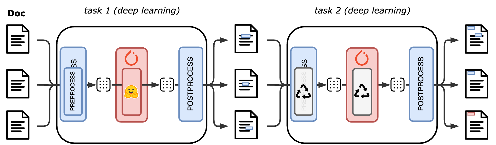

Torch Component[source]
Torch components allow for deep learning operations to be performed on the Doc object and must be trained to be used. Such pipes can be used to train a model to detect named entities, predict the label of a document or an attribute of a text span, and so on.

Anatomy of a trainable pipe
Building and running deep learning models usually requires to preprocess the input sample into features, to batch or collate these features together to process multiple samples at once, running deep learning operations over these features (in Pytorch, this step is done in the forward method) and to postprocess the outputs of these operation to complete the original sample.
In the trainable pipes of EDS-NLP, preprocessing and postprocessing are decoupled from the deep learning code but collocated with the forward method. This is achieved by splitting the class of a trainable component into four methods, which allows us to keep the development of new deep-learning components simple while ensuring efficient models both during training and inference.
Methods of a trainable component
preprocess[source]
Preprocess the document to extract features that will be used by the neural network and its subcomponents on to perform its predictions.
Parameters
| PARAMETER | DESCRIPTION |
|---|---|
doc | Document to preprocess TYPE: |
| RETURNS | DESCRIPTION |
|---|---|
Dict[str, Any] | Dictionary (optionally nested) containing the features extracted from the document. |
collate[source]
Collate the batch of features into a single batch of tensors that can be used by the forward method of the component.
Parameters
| PARAMETER | DESCRIPTION |
|---|---|
batch | Batch of features TYPE: |
| RETURNS | DESCRIPTION |
|---|---|
BatchInput | Dictionary (optionally nested) containing the collated tensors |
forward[source]
Perform the forward pass of the neural network.
Parameters
| PARAMETER | DESCRIPTION |
|---|---|
batch | Batch of tensors (nested dictionary) computed by the collate method TYPE: |
| RETURNS | DESCRIPTION |
|---|---|
BatchOutput | |
postprocess[source]
Update the documents with the predictions of the neural network. By default, this is a no-op.
Parameters
| PARAMETER | DESCRIPTION |
|---|---|
docs | List of documents to update TYPE: |
results | Batch of predictions, as returned by the forward method TYPE: |
inputs | List of preprocessed features, as returned by the preprocess method TYPE: |
| RETURNS | DESCRIPTION |
|---|---|
Sequence[Doc] | |
Additionally, there is a fifth method:
post_init[source]
This method completes the attributes of the component, by looking at some documents. It is especially useful to build vocabularies or detect the labels of a classification task.
Parameters
| PARAMETER | DESCRIPTION |
|---|---|
gold_data | The documents to use for initialization. TYPE: |
exclude | The names of components to exclude from initialization. This argument will be gradually updated with the names of initialized components TYPE: |
Nesting trainable pipes
Like pytorch modules, you can compose trainable pipes together to build complex architectures. For instance, a trainable named entity recognition component may delegate some of its logic to an embedding component, which will only be responsible for converting words into a embeddings. Nesting pipes allows switching parts of the neural networks to test various architectures and keeping the modelling logic modular.
Nested preprocessing
This is where the idea of collocating preprocess and collate with forward really shines: much like pytorch modules, they can be called recursively on the subcomponents of a trainable pipe. This allows to extend the composition pattern to the preprocessing step to enable true modularity.
Sharing subcomponents
Sharing parts of a neural network while training on different tasks can be an effective way to improve the network efficiency. For instance, it is common to share an embedding layer between multiple tasks that require embedding the same inputs.
In EDS-NLP, sharing a subcomponent is simply done by sharing the object between the multiple pipes. You can either refer to an existing subcomponent when configuring a new component in Python, or use the interpolation mechanism of our configuration system.
nlp.add_pipe(
eds.ner_crf(
...,
embedding=eds.transformer(
model="bert-base-uncased",
window=128,
stride=96,
),
),
name="first",
)
nlp.add_pipe(
some_other_task(
embedding=nlp.pipes.first.embedding,
),
name="second",
)
[components.first]
@factory = "eds.ner_crf"
...
[components.first.embedding]
@factory = "eds.embeddings"
...
[components.second]
@factory = "some_other_task"
embedding = ${components.first.embedding}
To avoid recomputing the preprocess / forward and collate in the multiple components that use it, we rely on a light cache system.
During the training loop, when computing the loss for each component, the forward calls must be wrapped by the pipeline.cache() context to enable this caching mechanism between components.
Implementation example
Here is a draft of a trainable component:
from typing import Any, Dict, Iterable, Sequence, List, Set
import torch
from tqdm import tqdm
from edsnlp import Pipeline, registry
from edsnlp.core.torch_component import TorchComponent
@registry.factory.register("my-component")
class MyComponent(TorchComponent):
def __init__(
self, # A subcomponent
nlp: Pipeline,
name: str,
*,
embedding: TorchComponent,
):
super().__init__(nlp=nlp, name=name)
self.embedding = embedding
def post_init(self, gold_data: Iterable["spacy.tokens.Doc"], exclude: set):
"""
This method completes the attributes of the component, by looking at some
documents. It is especially useful to build vocabularies or detect the labels
of a classification task.
Parameters
----------
gold_data: Iterable[Doc]
The documents to use for initialization.
exclude: Set
The names of components to exclude from initialization.
This argument will be gradually updated with the names of initialized
components
"""
super().post_init(gold_data, exclude)
# Initialize the component with the gold documents
with self.label_vocabulary.initialization():
for doc in tqdm(gold_data, desc="Initializing the component"):
# Do something like learning a vocabulary over the initialization
# documents
...
# And post_init the subcomponent
self.embedding.post_init(gold_data, exclude)
# Initialize any layer that might be missing from the module
self.classifier = torch.nn.Linear(...)
def preprocess(self, doc: "spacy.tokens.Doc", **kwargs) -> Dict[str, Any]:
"""
Preprocess the document to extract features that will be used by the
neural network and its subcomponents on to perform its predictions.
Parameters
----------
doc: Doc
Document to preprocess
Returns
-------
Dict[str, Any]
Dictionary (optionally nested) containing the features extracted from
the document.
"""
return {
"embedding": self.embedding.preprocess(doc),
"my-feature": ...,
}
def collate(self, batch) -> Dict:
"""
Collate the batch of features into a single batch of tensors that can be
used by the forward method of the component.
Parameters
----------
batch: Dict[str, Any]
Batch of features
Returns
-------
BatchInput
Dictionary (optionally nested) containing the collated tensors
"""
return {
"embedding": self.embedding.collate(batch["embedding"]),
"my-feature": torch.as_tensor(batch["my-feature"]),
}
def forward(self, batch: Dict) -> Dict:
"""
Perform the forward pass of the neural network.
Parameters
----------
batch: BatchInput
Batch of tensors (nested dictionary) computed by the collate method
Returns
-------
BatchOutput
Dict of scores, losses, embeddings tensors, etc.
"""
# Call the embedding subcomponent
embeds = self.embedding(batch["embedding"])
# Do something with the embedding tensors
output = ...
return output
def postprocess(
self,
docs: Sequence["spacy.tokens.Doc"],
results: Dict,
inputs: List[Dict[str, Any]],
) -> Sequence["spacy.tokens.Doc"]:
"""
Update the documents with the predictions of the neural network.
By default, this is a no-op.
Parameters
----------
docs: Sequence[Doc]
List of documents to update
results: BatchOutput
Batch of predictions, as returned by the forward method
inputs: BatchInput
List of preprocessed features, as returned by the preprocess method
Returns
-------
Sequence[Doc]
"""
...
return docs